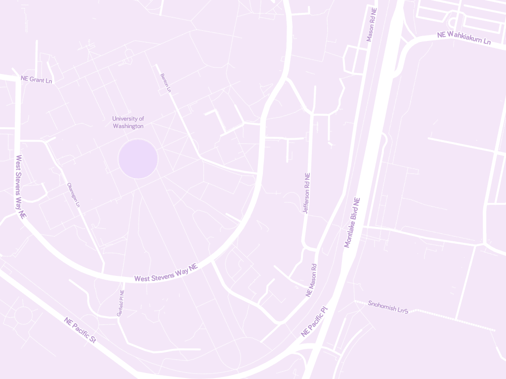

This html file makes the following query to the server:
{ullat: 47.655195, ullon: -122.309108, lrlat: 47.651298, lrlon: -122.301519, depth: 7}The expected raster result is:
{ullat: 47.65600769891789, ullon: -122.310791015625, lrlat: 47.65045541887475, lrlon: -122.2998046875, success: true}The image output of your program is shown below (will be blank if your server isn't running or working properly):
The correct output should be:
If your image looks different (or is blank), your implementation is not correct.